LA SENDA DE LA HISTORIA Y EL BUDO
Sigue las huellas de Miyamoto Musashi. Un fascinante viaje por la geografía, templos y castillos feudales del Japón tradicional.


✨ Toca o arrastra con el ratón para rotar libremente en 3D
La guía definitiva de Japón para Budokas
Una aventura literaria y fotográfica que conecta la historia feudal japonesa, las artes marciales y la filosofía de vida de los guerreros eternos.
Viaje al Corazón de Japón
Explora templos budistas, castillos medievales, campos de batalla históricos y la mística del Monte Fuji con fotos y mapas únicos.
La senda de Miyamoto Musashi
Sigue el itinerario del legendario espadachín y autor de "El Libro de los Cinco Anillos" a través de los parajes donde meditó y luchó.
Cultura Budoka y Tradición
Descubre el Kobudo, Iaido y Karate-Do desde su origen espiritual y su aplicación práctica para templar el carácter hoy.
Las Siete Virtudes del Bushido
Los pilares eternos sobre los que se construía el espíritu del guerrero. Principios éticos para el autogobierno.
GI (Rectitud / Justicia)
Sé sumamente honesto en tus tratos con todo el mundo. Cree en la justicia, no en la que emana de los demás, sino en la tuya propia.
YU (Valor Heroico)
Alzarse sobre las masas de gente que temen actuar. El coraje no es ciego, es inteligente y fuerte. Reemplaza el miedo por el respeto y la precaución.
JIN (Benevolencia / Compasión)
Mediante el entrenamiento y la fuerza interior, el samurai desarrolla compasión. Ayuda a tus semejantes en cada oportunidad.
REI (Cortesía / Respeto)
Los samurai no tienen motivos para ser crueles. No necesitan demostrar su fuerza. Un samurai es cortés incluso con sus enemigos.
MAKOTO (Sinceridad Absoluta)
Cuando un samurai dice que hará algo, es como si ya estuviera hecho. Nada en la tierra lo detendrá. Hablar y hacer son la misma acción.
MEIYO (Honor)
El verdadero samurai solo tiene un juez de su propio honor, y es él mismo. Las decisiones que tomas y cómo las ejecutas reflejan quién eres en verdad.
CHUGI (Deber / Lealtad)
Haber hecho o dicho algo significa que te pertenece. Eres responsable de ello y de todas sus consecuencias. Leal a quienes están bajo tu cuidado.
Consulta el Oráculo del Bushido
Despeja tu mente, realiza una respiración profunda y haz clic en una de las tres cartas ancestrales. Deja que el destino te revele la virtud que debe guiar tus decisiones hoy.
YŪ - VALOR
"El coraje es la fuerza del espíritu para ejecutar lo que la razón dicta."
Afronta hoy ese problema que has estado posponiendo. Tu fuerza crece al actuar.
GI - RECTITUD
"La rectitud es el hueso que da soporte. Sin ella la cabeza no puede mantenerse en alto."
Haz lo correcto en tus decisiones de hoy, no lo que sea más fácil o rápido.
JIN - COMPASIÓN
"La benevolencia es una virtud real. Hace que el fuerte sea amable con el débil."
Hoy, ofrece ayuda genuina a alguien a tu alrededor. La verdadera fuerza protege.
Las Obras del Autor
Dos tomos excepcionales que plasman un viaje sin precedentes por la historia feudal y las artes marciales de Japón.
La Ruta del Samurái: Japón para Budokas
Un recorrido geográfico detallado por castillos, cementerios históricos y dojos antiguos, sirviendo como guía de viajes para todo cultor de artes marciales.
El Paso de las Luciérnagas
La segunda parte de esta gran expedición, que profundiza en las leyendas de combates épicos, templos escondidos y el legado samurái en la modernidad.
Ediciones Disponibles
Formatos eBook
Dispositivos Amazon Kindle
- Disponible para descarga instantánea
- Optimizado para Kindle y e-readers
- Acceso rápido a los itinerarios de viaje
Edición Impresa
Libro de Papel Premium
- Papel ahuesado y portadas a todo color
- Más de 200 fotografías exclusivas
- 9 mapas detallados de los recorridos
- Firmado y enviado directamente por el autor
Conoce a Jorge Orpianesi
Reconocido artista marcial, instructor y profundo estudioso de la cultura e historia tradicional japonesa.
Nacido en Córdoba, Argentina (1969), practica disciplinas tradicionales japonesas como Karate-Do, Kobudo, Aikido e Iaido desde 1982. Instructor titulado desde 1989 y ex-competidor nacional, formó parte en 2013 del selecto seminario mundial en Okinawa. Es columnista de la prestigiosa revista norteamericana Bugeisha y a través de su travesía por Japón dio vida a estas crónicas literarias.


Galería de la Travesía
Un recorrido visual exclusivo por los santuarios, castillos feudales y caminos sagrados que forman la esencia de las obras de Jorge Orpianesi.


Blog Samurai
Artículos, historia, meditaciones sobre el Bushido y relatos de viajes de Jorge Orpianesi.
Recibe el Primer Capítulo Gratis
Suscríbete para recibir una versión preliminar del libro en formato PDF, además de meditaciones y reflexiones semanales sobre el Bushido.